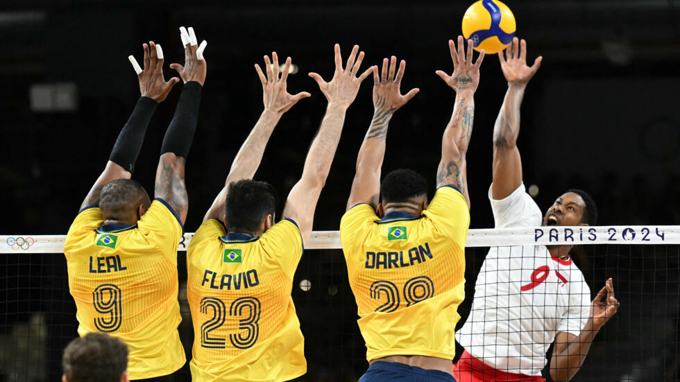
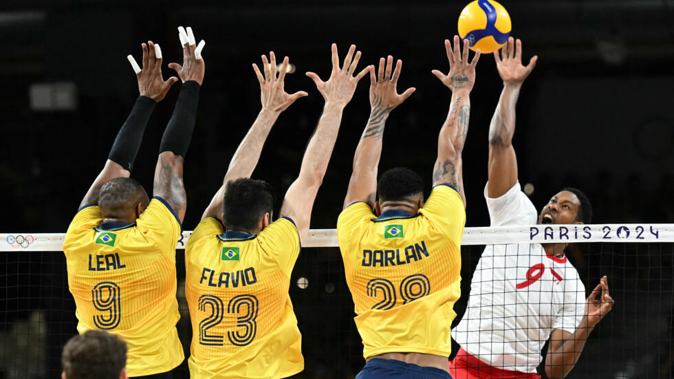

Sobre:
O vôlei, também chamado de volley ou voleibol, é um esporte de origem norte-americana do século XIX. É um esporte de popularidade significativa em grande parte do mundo, e está presente em muitos torneios e eventos esportivos de âmbito internacionais, tais como os Jogos Olímpicos e os Jogos Panamericanos. Pode ser praticado tanto em quadras abertas quanto em quadras fechadas, bem como é praticado quase que igualmente tanto por homens quanto mulheres.
A quadra de vôlei é atravessada por uma rede, que a divide em dois campos. Cada campo só pode ser ocupado pela sua respectiva equipe. O objeto usado para a prática de vôlei é uma bola e o objetivo principal do jogo consiste na marcação de pontos ao mandar a bola para o campo adversário e fazer com que ela toque o chão. A instituição responsável pela organização de eventos e da regulação das regras é a FIVB, Fédération Internationale de Volleyball.